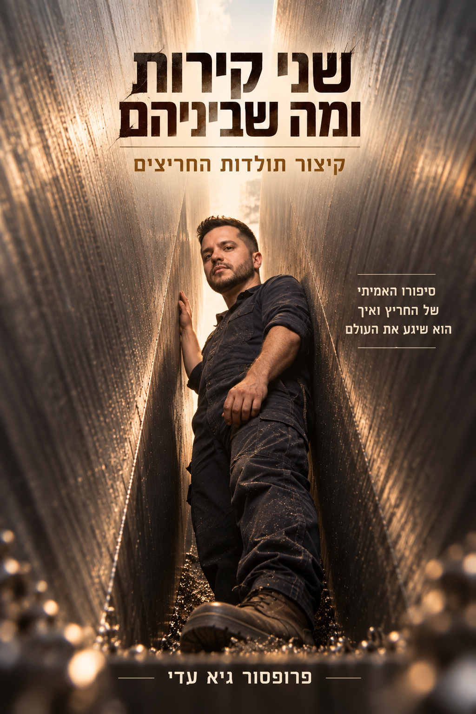

הרצאת אורח
מתן — מייסד MMG
איך הופכים רעיון למערכת שעובדת, גדלה וממשיכה קדימה.
שיטה מעשית לניהול פרויקטים — מהרעיון הראשון, דרך התכנון והביצוע, ועד לתוצאה.
גלו את הקורס ↓לא עוד רעיון שנשאר במחברת.
הקורס בנוי כתהליך מסודר: מיקוד, תכנון, ניהול זמן, ביצוע, עבודה עם אילוצים ולבסוף — סגירת הפרויקט.
איך הופכים רעיון למערכת שעובדת, גדלה וממשיכה קדימה.

איך מתחילים חריצים: חשיבה שיטתית, דיוק והגדרה נכונה של הבעיה.
איך עקפתי את קיסריה — התמדה, כיוון, ומה עושים כשהדרך ארוכה מהצפוי.
כולל פרויקט מעשי שמתחיל בשיעור 8, הרצאות אורח ונקודות ביקורת לאורך הדרך.
מבוסס על הספר ״איך לא לסיים פרויקט״